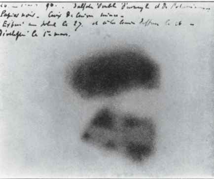
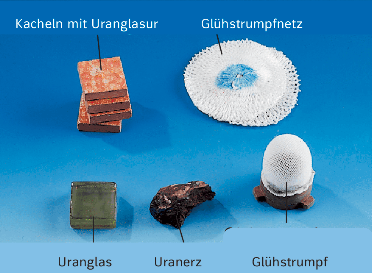

2) Wodurch entsteht künstliche Radioaktivität laut Text?

3) Was zeigte die geschwärzte Fotoplatte bei Becquerel?

4) Was macht eine Nebelkammer sichtbar?

5) Was misst ein Geiger-Müller-Zähler?
6) Was bedeutet "Zählrate"?
7) Was ist die Nullrate?

8) Warum ist der Glühstrumpf ein gutes Beispiel?